V0 · LEGACY
Deprecated
Mevcut Kod Tabanı Durumu

Legacy kod tabanından nihai kilitli üretim standardına kadar yapılan her tasarım hamlesi, eklenen/çıkarılan bileşenler ve tasarım sistemi gerekçeleri yan yana karşılaştırılmıştır.
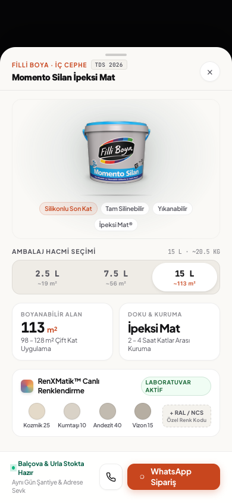
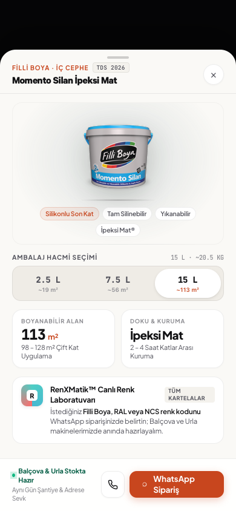
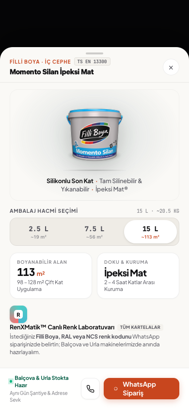
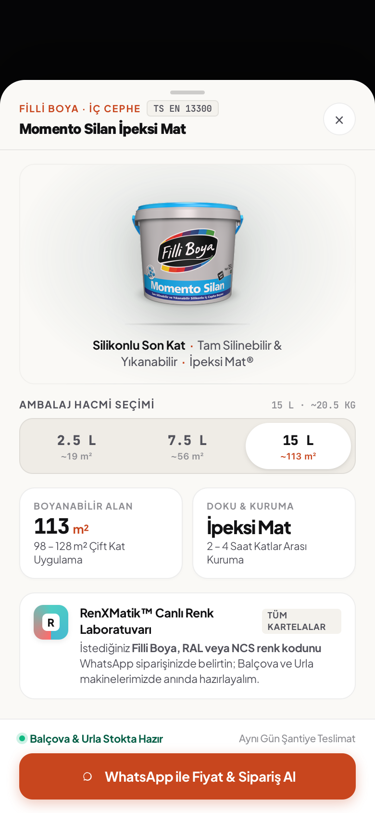

Tek bir CSS/DOM şablonunun Filli Boya (Hacim / m²) ve Saint-Gobain Weber (Set / kg / Priz) üzerinde token kırılmadan nasıl çalıştığı test edilmiştir.
2.5 L, 7.5 L, 15 L (Ağırlık: ~20.5 KG)113 m² (98–128 m² Çift Kat Uygulama)İpeksi Mat (2–4 Saat Katlar Arası Kuruma)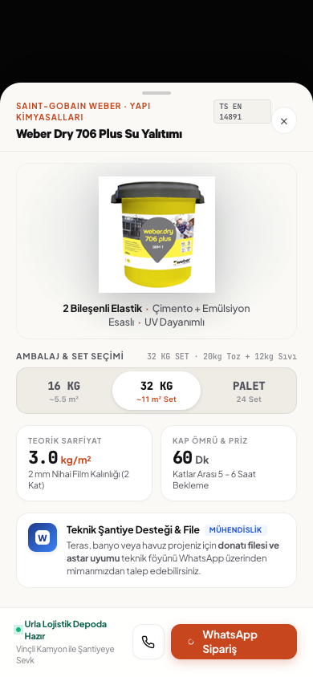
16 KG, 32 KG SET, PALET (20kg Toz + 12kg Sıvı)3.0 kg/m² (2 mm Film Kalınlığı)60 Dk (Kap Ömrü & Priz Süresi)Mevcut kod tabanındaki düz buton listesi ile 2 katmanlı hiyerarşi ve mono sayaçlara sahip optimize edilmiş versiyonun karşılaştırması.
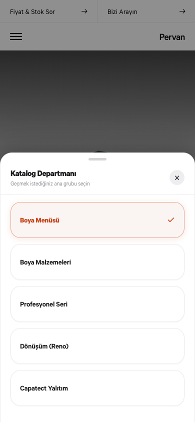
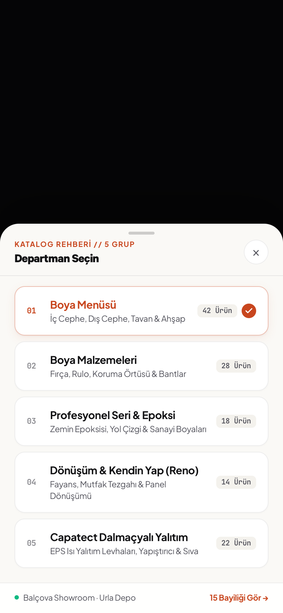
Sitedeki 39 HTML sayfası taranarak tespit edilen ve WebKit ile render edilen 6 gerçek overlay yapısı.
Katalog sayfaları arası dikey grup değiştirme sheet'i.
TDS metraj verileri, ambalaj seçici ve WhatsApp sipariş kartı.
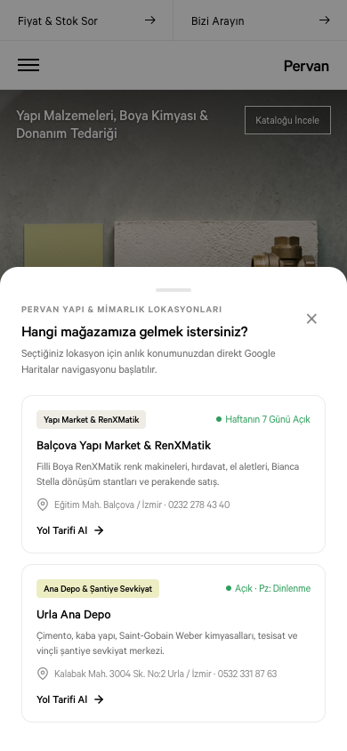
Balçova Showroom ve Urla Depo GPS rota seçim sheet'i.
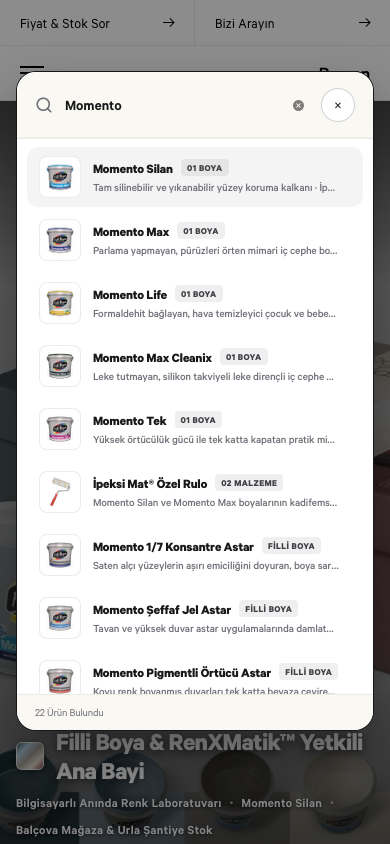
259+ ürün arasında canlı arama ve filtreleme paleti (⌘K).
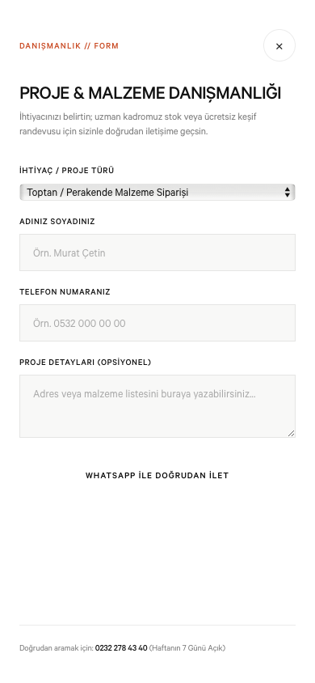
Villa tadilatı, banyo ve çatı izolasyonu teklif formu.
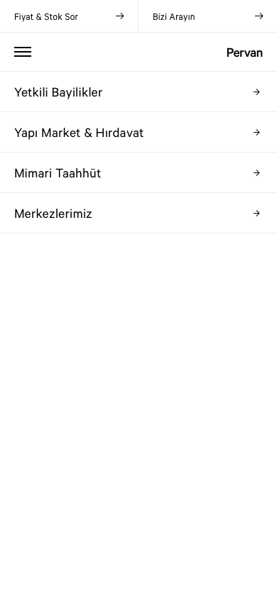
Header hamburger menüsünden açılan 4 ana akordeon çekmecesi.